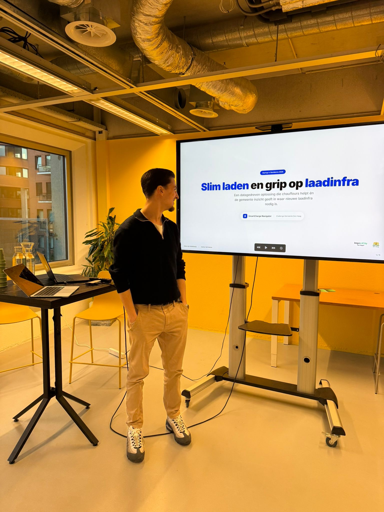

SmartCharge Navigator
Werkend prototype voor EV-laadinfrastructuur — Deelname aan challenge Gemeente Den Haag

Over het project
De afgelopen maanden bouwden wij SmartCharge Navigator tijdens de Startup in Residence Intergov challenge van de Gemeente Den Haag, met als uitdaging: "Slimmer plaatsen en vinden van laadplekken".
Samen met Justus Verhoeven ontwikkelden wij een datagedreven platform met twee componenten: een mobiele app voor chauffeurs en een analytics dashboard voor de gemeente. We bouwden een werkend prototype met kaart, slimme filters, en wijk-analyses voor beleidsinzichten.
Het probleem
In Den Haag groeit het aantal elektrische voertuigen razendsnel. Vooral zzp'ers en kleine ondernemers zijn afhankelijk van de openbare ruimte om hun bestelauto op te laden, vaak in de avond of nacht.
De uitdaging: Wanneer laadpalen bezet of defect zijn, rijden chauffeurs rond op zoek naar een vrije plek. Dat 'zoekverkeer' veroorzaakt:
- Extra uitstoot en vervuiling
- Onnodig verkeersdrukte
- Frustratie bij chauffeurs
- Verlies van tijd en productiviteit
Tegelijkertijd mist de gemeente inzicht in waar de vraag naar nieuwe laadinfra het grootst is. Zoekverkeer geeft waardevolle signalen over plekken waar het aanbod niet voldoet aan de vraag.
Onze oplossing
We ontwikkelden een dual-purpose platform dat beide problemen aanpakt:
1. Mobile app voor chauffeurs (Flutter)
Een iOS app die real-time laadpaaldata integreert van het Nationaal Data Wegverkeer (NDW) — meer dan 56.000 laadpunten door heel Nederland. De app helpt chauffeurs:
- Real-time beschikbaarheid van laadpalen bekijken
- Route-optimalisatie naar de dichtstbijzijnde vrije laadplek
- Filters op laadsnelheid, type connector, en betaalmethode
- Notificaties wanneer een laadplek vrijkomt in de buurt
- Historische data over gemiddelde bezetting per tijdstip
2. Analytics dashboard voor gemeente (Next.js)
Een web-based dashboard dat de gemeente inzicht geeft in:
- Zoekverkeer-heatmaps — waar rijden chauffeurs rond op zoek naar laadpalen?
- Vraagdruk per wijk — waar is de vraag groter dan het aanbod?
- Piekuren — wanneer is de laadvraag het hoogst?
- Bezettingsgraad — welke laadpalen zijn onderbenut of overbezet?
- Data-driven aanbevelingen voor nieuwe laadinfra-plaatsing


Technische stack
Het project is gebouwd met moderne, schaalbare technologieën:
Mobile app
- Flutter & Dart — Cross-platform framework (iOS focus)
- Firebase — Real-time database en authenticatie
- Google Maps API — Kaartweergave en routing
- NDW Open Data API — 56.000+ laadpunten data
Dashboard
- Next.js & TypeScript — Modern React framework
- Tailwind CSS — Utility-first styling
- Chart.js / D3.js — Data visualisatie
- PostgreSQL — Analytics data opslag
Resultaat & wat we hebben geleerd
We hebben deelgenomen aan de Startup in Residence Intergov challenge en een werkend prototype ontwikkeld. Uiteindelijk zijn we niet geselecteerd voor het programma, maar deze ervaring was ontzettend waardevol.
Wat we hebben opgeleverd:
- Werkend prototype met Flutter mobile app en Next.js dashboard
- Integratie van 56.000+ laadpunten via open data NDW
- Real-time kaartweergave met beschikbaarheid en routing
- Analytics dashboard met wijk-analyses en beleidsinzichten
- Slimme filters op laadsnelheid, type, en beschikbaarheid
Wat we hebben geleerd:
- Werken met overheidsdata — Integratie van open data en real-time processing
- De uitdagingen rondom laadinfrastructuur — Inzicht in maatschappelijke problematiek
- Vertaling probleem naar oplossing — Van challenge brief naar werkend prototype
- Samenwerking met overheid — Begrip van procurement en beleidsprocessen
- Rapid prototyping — Snel itereren en valideren met eindgebruikers
Over de challenge
We namen deel aan de marktverkenningsfase van de Startup in Residence Intergov challenge — een samenwerkingsverband tussen gemeenten en startups om innovatieve oplossingen te ontwikkelen voor maatschappelijke uitdagingen.
De challenge bestond uit twee fases:
- Marktverkenning — Interessemelding met korte omschrijving van de oplossing
- Offertefase — 3-5 geselecteerde partijen werken plan van aanpak uit en pitchen
- Programma — Winnende partij krijgt €25.000 en 5 maanden begeleiding
Wij werden uitgenodigd om ons prototype te pitchen in Den Haag. We presenteerden onze oplossing met werkende demo's van de app en het dashboard. Uiteindelijk zijn we niet geselecteerd voor het volledige programma, maar deze ervaring was ontzettend waardevol — van het ontwikkelen van een werkend prototype tot het pitchen voor beleidsmakers en stakeholders.
De challenge
De Gemeente Den Haag zocht naar datagedreven oplossingen voor het slimmer vinden en plannen van laadplekken in zero-emissiezones. De challenge richtte zich specifiek op:
- Ondersteuning voor chauffeurs bij het snel vinden van beschikbare laadplekken
- Reductie van zoekverkeer en inzicht in verkeersstromen
- Hulp voor gemeenten bij het bepalen waar extra laadinfra nodig is
- Oplossingen die op termijn schaalbaar zijn naar andere steden
Voor wie?
De challenge richtte zich op startups, scale-ups en innovatieve mkb's die werken met data-analyse, AI, navigatie, mobiliteit of energiebeheer. De focus lag op partijen met de ambitie om structurele, schaalbare impact te maken.
Reflectie
Hoewel we niet door zijn gegaan naar de volgende fase, was dit project een waardevolle leerervaring:
- Van probleem naar prototype — We hebben in korte tijd een werkend prototype gebouwd voor een complexe uitdaging
- Open data integratie — Praktische ervaring met het NDW (Nationaal Toegangspunt) en 56.000+ laadpunten
- Dual-purpose platform — Balans vinden tussen eindgebruiker (chauffeurs) en stakeholder (gemeente) behoeften
- Maatschappelijke impact — Inzicht in de transitie naar elektrisch vervoer en bijbehorende infrastructuur uitdagingen
- Rapid prototyping — Snel itereren met Flutter en Next.js om een MVP te realiseren
- Challenge mindset — Ervaring met het pitchen van een oplossing voor overheidspartners
Deze ervaring heeft me laten zien hoe je datagedreven oplossingen kunt bouwen voor maatschappelijke uitdagingen, en hoe belangrijk het is om zowel technische haalbaarheid als gebruikersbehoefte in balans te brengen.
Meer weten over dit project?
Neem contact met me op om te bespreken hoe ik vergelijkbare oplossingen kan bouwen voor jouw organisatie.
Stuur een bericht